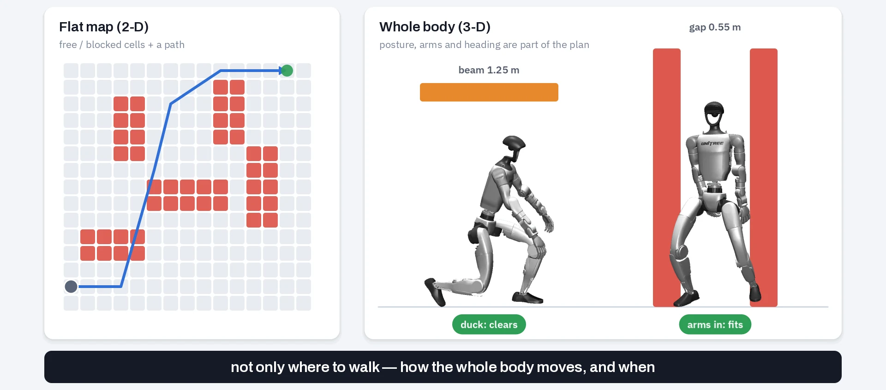
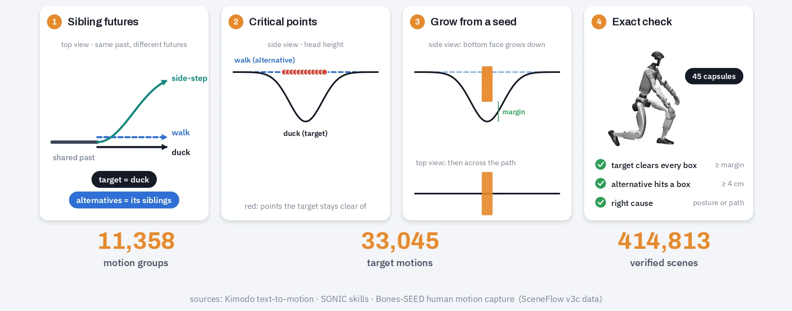
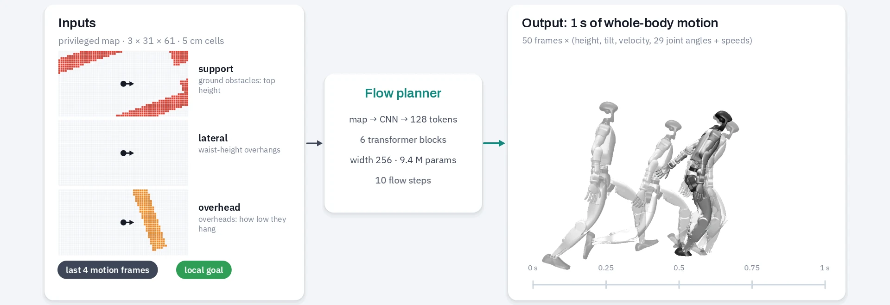

The whole story
Fifteen minutes, every idea explained
A narrated walk-through for first-time audiences: the problem, learned hallucination, flow matching from scratch, SceneFlow, the teacher's planning, the arena, the lidar student and the road to the real robot. English captions are built in.
Download the 720p video (39 MB) or the captions (.vtt). All robot footage is Isaac Lab closed-loop physics replayed in MuJoCo; nothing shown has run on hardware.
01 · The problem
Navigation is a whole-body problem
Most robots plan on a flat map: every cell free or blocked, and a path through the free cells. A humanoid is not a disk on a floor plan. It can duck under a beam, pull its arms in to slip through a gap, or turn sideways. The question is not only where to walk, but how the whole body should move, and when. Learning that needs thousands of scenes paired with the whole-body motion that gets through each one, and collecting or hand-designing those pairs does not scale.

01 · The idea
Learning from hallucination
Motion is plentiful: human motion capture, text-to-motion models, the robot's own skills. So we flip the problem. Start from a motion and imagine the obstacles that make exactly that motion necessary. The key word is necessary: next to the real motion we keep what the body would have done otherwise (here, walking upright). Only an obstacle that the easy alternative hits, and the real motion clears, explains the motion.
01 · The framework
Two flows
Flow 1, SceneFlow, goes from motion to scene: given a motion, it samples many different scenes that make the motion necessary. Flow 2, the flow planner, goes back: given a scene and a goal, it samples the whole-body motion that gets there. Flow 1 manufactures training data for flow 2.
Everything is measured in the G1 Traverse Arena, on scenes none of these models was trained on.
02 · The core tool
Flow matching, in one picture
Both flows use the same recipe. Pair noise x₀ with a real example x₁ and connect them with a straight line. At a random time t the network sees the in-between point and learns the velocity that carries it to the data. Averaged over many pairs, those velocities form a smooth field; to generate, drop fresh noise into the field and follow the arrows. The toy below uses the exact field for points on a G1 silhouette. Change the condition, and the same noise flows somewhere else.
03 · SceneFlow
The data engine: what “necessary” means
SceneFlow learns from a slower, exact engine. It takes groups of motions that share the same past but continue differently (duck, side-step, keep walking). Each future is a target; its siblings are the alternatives a scene must rule out. On an alternative's body the engine finds critical points the target stays clear of, grows a box from each point face by face until it would touch the target, and keeps the scene only if an exact check with 45 body capsules says the target clears every box and the alternative hits one.

A flow over sets of boxes
A scene is up to 8 box slots × 12 numbers: exists, kind (ground, low, mid, overhead), position, yaw, size, bottom and top. The condition is the motion (28 snapshots of 30 body points spanning −0.5…+2.3 s) plus optional knobs, such as the margin or the number of obstacles, that can be left blank. A transformer encodes the motion; a second one turns noisy slots into a velocity (13.3 M parameters, under an hour on one GPU). Sampling takes 40 Euler steps; from t = 0.5, two gentle corrections keep the boxes clear of the motion and in the way of the alternative; then each box is snapped against the body and checked exactly. Scrub the real 40-step sample below.
Watch it imagine a scene
Eight noisy boxes drift, settle and lock into a scene: beams low enough to force the duck, a wall that shapes the path. After the snap the duck clears every box by a few centimetres, while walking upright would hit the beam. Sampling again gives different scenes for the same motion, and different motions get different kinds of scene.
CycleFlow: keep the scenes that explain the motion
One more piece connects the two flows. For each generated scene we ask a planner how much better it predicts the real motion when it sees the scene than in an empty room: Δ = ℓ(motion | empty room) − ℓ(motion | scene), where ℓ is its flow-matching loss. A large Δ means the scene carries information about the motion; for every motion we keep the most informative of four verified scenes.
04 · The teacher
Flow 2: scene + goal → whole-body motion
The teacher reads a privileged height map, 3 m × 1.5 m around the robot in three layers (ground obstacles, waist-height overhangs, how low the overheads hang), the last four frames of its own motion, and a local goal. Out comes one second of whole-body motion: body height, tilt, velocity and all 29 joint angles, frame by frame. It is a 9.4 M-parameter flow-matching transformer, trained in about half an hour on one GPU on 68,180 windows of ordinary navigation motion plus 15,264 SceneFlow necessity windows (sampled 47% of the time), with three seeds for every result.

How a plan is made
Every 0.16 s: (1) a cost-aware route on the true map that keeps its distance from obstacles; (2) a local goal a short way ahead, steering toward the route; (3) 16 candidate motions sampled from different noise in 10 flow steps; (4) a guidance term that pushes every body part away from the obstacles, padded by 8 cm; (5) a whole-body clearance check, then the safe candidate that ends closest to the local goal; (6) the first 0.16 s is executed and the robot replans from where it really is. Where the route's clearance drops below 45 cm, a tight mode slows the robot and brings its arms in. Scrub a real slalom run below.
The closed loop
- Flow plannernew 1 s plan every 0.16 s
- SONIC trackerfrozen · joint targets at 50 Hz · never sees the scene
- PhysicsIsaac Lab · 200 Hz
- Measured statejoints, pelvis, velocity → back to the planner
Replanning from the measured state absorbs slips and tracking errors. Only the first sixth of each plan is ever executed.
The teacher at work
Closed-loop runs on arena and validation scenes the teacher never trained on. Teal dots are the committed 1 s plan, blue dots the pelvis trail.
05 · The arena
G1 Traverse Arena
To know whether any of this generalizes we needed a test no model trained on. The arena's generator is separate from our training data engine, and every scene ships with a certificate. Seventeen families of scenes: offices, warehouses, lobbies, parks, parking lots, debris fields, and drills for ducking, squeezing, slaloms and dead ends. Four families are sealed and kept out of every decision.
organized
office corridoroffice roomwarehouse aisleslobby queuehome living
unorganized
storage clutterdebris fieldconstruction site
outdoor
parkstreet sidewalkparking lotforest
drills
ducksqueezeslalomdead-end trapdoors
red = sealed family · 1,044 scenes in tiers A/B · 371 whole-body scenes in tier C
Paired by task and seed, sign tests, registrations before reads, and every new switch off by default (bit-identical when off). Self-audit: when we found the robot could walk around the outside of open arena scenes, we closed them with certified boundary walls and reset every baseline. All numbers below are on the closed arena.
05 · Results · 12 October 2026
Where the teacher stands
On the validation scenes, goals rose from 33 to 49 of 71, mostly from two fixes: a route that covers the whole task, and slowing down with the arms tucked in narrow passages. On the closed arena dev panel the current teacher reaches two thirds of its goals with no falls. The whole-body tier is much harder.
Where it breaks
Asked to duck under a sign at 1.06 m, every plan is rated safe, but SONIC lowers the pelvis only to 0.65 m and the torso clips the sign: the tracker's executed duck is the limit, not the plan. Walking straight at a torso-height counter fails, while turning sideways gets through; that sideways run comes from an experimental retrieval variant we have not adopted.
06 · The student
Seeing the world through lidar
A real robot has no perfect map, so the student builds its own from the G1's head-mounted Livox MID-360. We simulate it ray by ray: each ray returns the first surface it meets (the floor, the side of an obstacle, the underside of a beam). Returns go into a memory grid, and the student reads the same 3 m map as the teacher, except that anything not seen yet counts as free. It keeps the teacher's network and training targets but learns them from these lidar maps (189k map windows); it does not imitate the teacher's plans.
06 · Toward the real robot
The deployment stack
On the G1, a node reads the robot's own MID-360 point cloud, removes the robot's body from it, corrects for motion within each sweep and fills the same memory. A fused GPU planner returns a plan in 0.10–0.18 s (two to three times faster than before, same choices); SONIC runs in C++ with TensorRT, and a gamepad can take over at any moment. We rehearse the full stack in MuJoCo with the real lidar pattern, odometry noise and delays.
- MID-360 point cloudthe G1's own head lidar, 10 Hz
- Deskew + self-filterper 5 ms slice, robot body removed
- Evidence memory → mapsame 3 × 31 × 61 map as in simulation
- Fused flow plannerGPU · p95 0.10–0.18 s per plan
- SONIC C++ runnerTensorRT · joint commands to the G1
Status: nothing on hardware yet
- H0 desk
- H1 network check
- H2 standing perception
- H3 gantry stand
- H4 stream replay
- H5 open floor 2–3 m
- H6 ground obstacles
- H7 beams
Green rungs: the stack is rated ready for them; none has been run yet. Beams wait for a deep-duck safety check. The only hardware contact so far is the SONIC runner's initialization and a fixed stand in a gantry, with the policy never armed.
07 · Outlook
Research principles
Next
- Read the sealed arena test
- Sideways passage through the tightest gaps
- Put the student on the arena
- Hardware ladder: H2 → H5
One flow imagines the world a motion needs.
The other finds the motion a world demands.